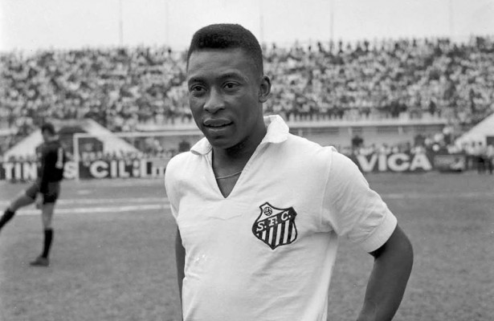
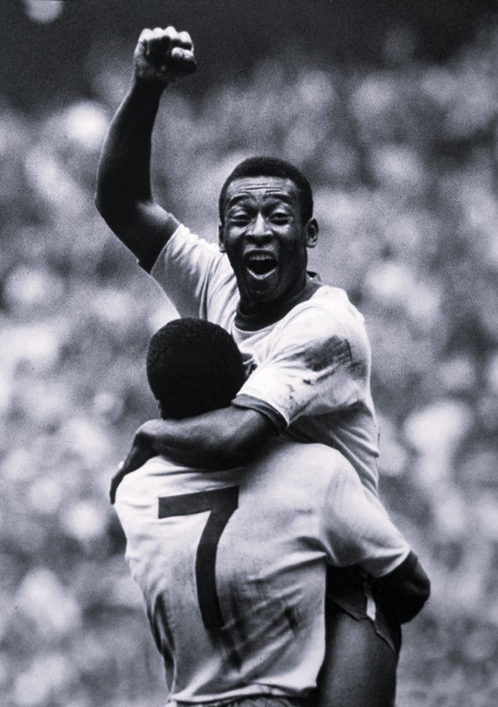
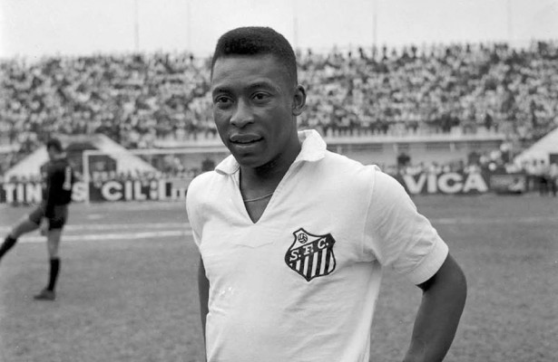
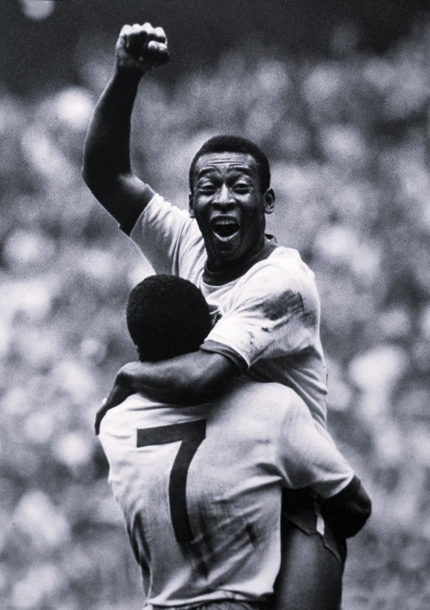

O Rei Pelé
Ex-Jogador de Futebol
Ex-Jogador de Futebol
Edson Arantes do Nascimento (Três Corações, 23 de outubro de 1940 - São Paulo, 29 de dezembro de 2022), mais conhecido como Pelé, é um ex-futebolista brasileiro que atuava como atacante. Ele é amplamente considerado como um dos maiores atletas de todos os tempos. Em 2000, foi eleito Jogador do Século pela Federação Internacional de História e Estatísticas do Futebol (IFFHS) e foi um dos dois vencedores conjuntos do prêmio Melhor Jogador do Século da FIFA. Nesse mesmo ano, Pelé foi eleito Atleta do Século pelo Comitê Olímpico Internacional. De acordo com a IFFHS, Pelé é o segundo maior goleador da história do futebol em jogos oficiais, marcando 765 gols em 812 partidas, e no total 1283 gols em 1363 jogos que incluem amistosos não oficiais, um recorde mundial do Guinness. Durante sua carreira, chegou a ser durante um período o atleta mais bem pago do mundo. Pelé começou a jogar pelo Santos Futebol Clube aos quinze anos e pela Seleção Brasileira de Futebol aos dezesseis. Durante sua carreira na seleção, ganhou três Copas do Mundo da FIFA: 1958, 1962 e 1970, sendo o único a fazê-lo como jogador. Ele também é o maior goleador da história da seleção brasileira, com 77 gols em 92 jogos. Em clubes, ele é o maior artilheiro da história do Santos e os levou a várias conquistas, com destaque para duas Copas Libertadores da América e dois Mundiais Interclubes, vencidos em 1962 e 1963. Conhecido por conectar a frase "jogo bonito" ao futebol, a "ação eletrizante e a propensão a objetivos espetaculares" de Pelé fizeram dele uma estrela rapidamente, e sua equipe fez turnês internacionais, a fim de aproveitar ao máximo sua popularidade. Desde que se aposentou em 1977, é embaixador mundial do futebol e fez muitos trabalhos de atuação e comerciais. Em janeiro de 1995 foi nomeado ministro do esporte no governo Fernando Henrique Cardoso. Em 2010, foi nomeado Presidente Honorário do New York Cosmos.

 


